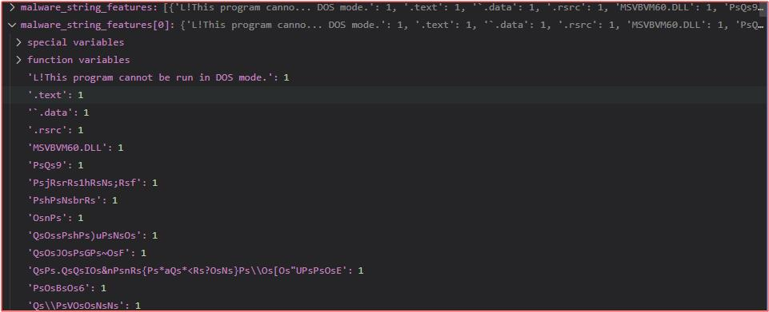
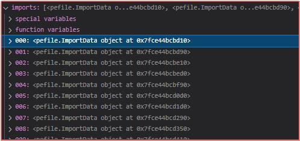
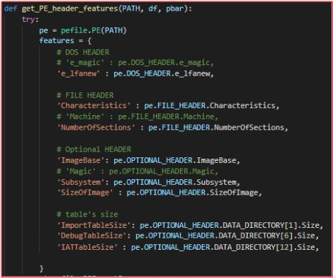

EDA / test HTML
1. 문자열 데이터

바이너리 파일 내에서 ASCII로 표현할 수 있는 문자열이다.
패킹이나 난독화가 되지 않은 바이너리 파일 내에 문자열이 존재한다면 그 정보를 바탕으로 실행 중 행동을 예측할 수 있다.
가령 바이너리가 패킹이나 난독화가 되어서 얻을 수 있는 문자열이 없다면 그 자체만으로도 악성 파일임을 의심할 수 있다.
2. Import Address Table

IAT(Import Address Table)에는 바이너리 내에 Import 되어있는 함수를 저장하고 있다.
악성 바이너리에서 흔히 사용하는 함수가 만약 존재한다면
학습을 할 수록 이 특성에 대한 정확도가 높아질 것이라 예상한다.
3. PE header Options

PE Header에는 바이너리에 대한 기본적인 특성들이 포함되어있다.
학습 시 유용하게 사용될 것 같은 특성들을 모델의 Input 으로 선택한다.